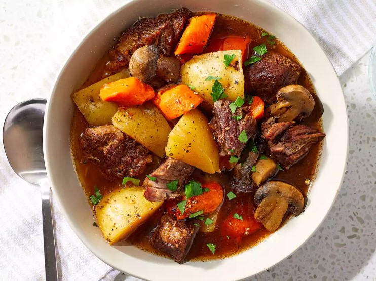

Beef and Guiness Stew
Home

Credit: Beef Stew Photo by Mike Ferguson
licensed under CC BY-NC 4.0
Description
This Guinness beef stew is a very simple dish, but at the same time, it has a deep, complex, rich flavor.
The maltiness of dark beer really does amazing things for the gravy. I served this in a nice ring of
green onion-mashed potatoes. I hope you give this a try, whether for Saint Patrick's Day or any time of the year.
Recipe serves six.
Ingredients
- 4 slices bacon, cut into small pieces
- 2 ½ pounds boneless beef chuck, cut into 2-inch pieces
- 1 ½ teaspoons salt, divided, or more to taste
- freshly ground black pepper to taste
- 2 onions, coarsely chopped
- 4 cloves garlic, minced
- 1 (14.9 ounce) can dark beer (such as Guinness)
- ¼ cup tomato paste
- 3 carrots, cut into 1-inch pieces
- 2 ribs celery, cut into 1-inch pieces
- 4 sprigs fresh thyme
- 1 teaspoon white sugar
- 2 ½ cups chicken stock, or as needed to cover
- 4 cups mashed potatoes (Optional)
Steps
- Cook and stir bacon in a heavy skillet over medium-high heat until bacon is browned and crisp, 3 to 4 minutes. Turn off the heat and transfer bacon into a large stew pot, reserving bacon fat in the skillet.
- Season beef chuck cubes generously with 1 teaspoon salt and black pepper to taste. Turn heat to high under the skillet and sear beef pieces in the hot fat on both sides until browned, about 5 minutes. Place beef in the stew pot with bacon, leaving fat in the skillet.
- Turn heat down to medium; cook and stir onions in the retained fat in the skillet until lightly browned, 5 to 8 minutes; season with a large pinch of salt.
- Cook garlic with onions until soft, about 1 minute. Pour beer into the skillet and stir with a wooden spoon, scraping up and dissolving any browned bits of food into the liquid.
- Pour cooking liquid from the skillet into the stew pot. Stir in tomato paste, carrots, celery, thyme sprigs, sugar, 1/2 teaspoon black pepper, and enough chicken broth to cover.
- Bring stew to a gentle simmer, stirring to combine; reduce heat to low and cover pot.
- Simmer stew until beef is fork-tender, about 2 hours.
- Stir stew occasionally and skim fat or foam if desired.
- Remove cover and raise heat to medium-high. Bring stew to a low boil and cook until stew has slightly thickened, 15 to 20 minutes. Remove and discard thyme sprigs and adjust salt and pepper to taste.
- Arrange mashed potatoes in a ring in a serving bowl; ladle stew into the center of the potatoes.